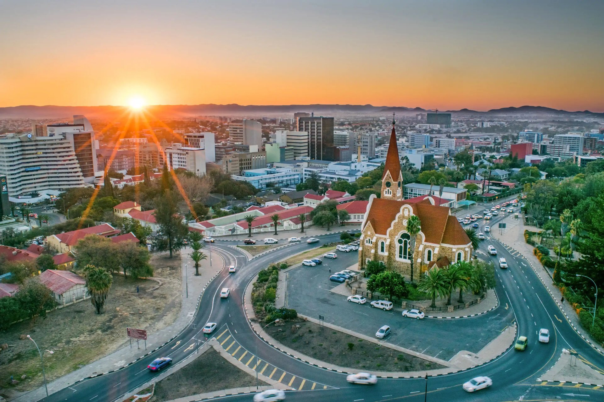
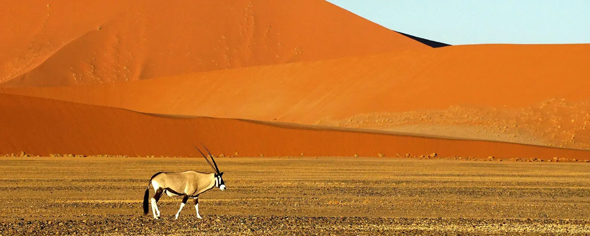
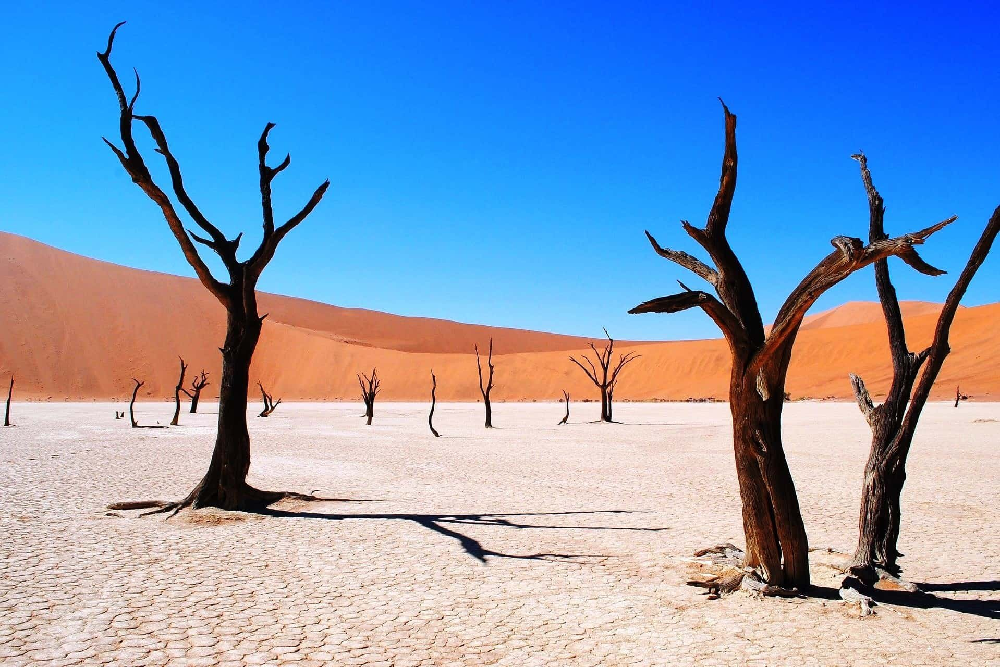
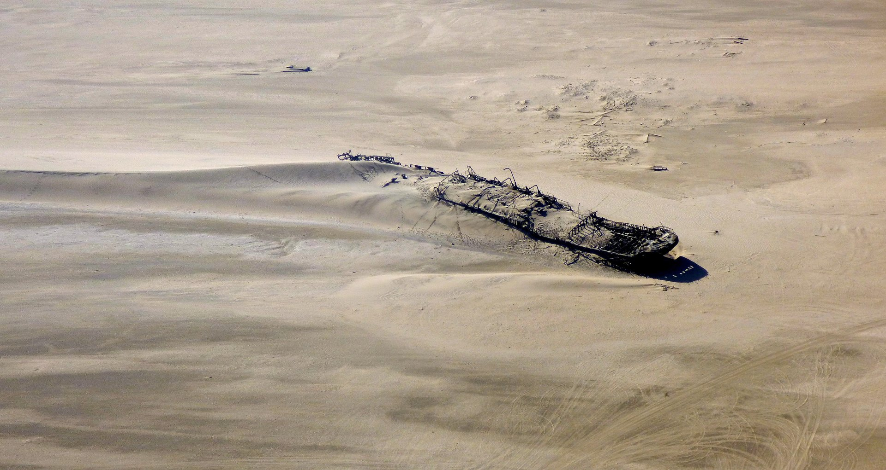
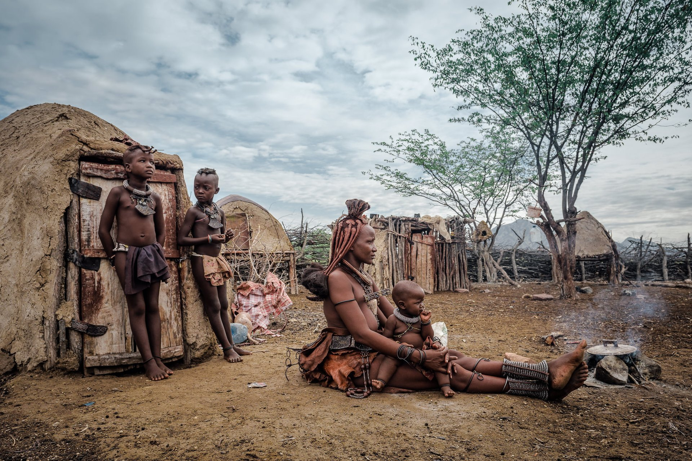
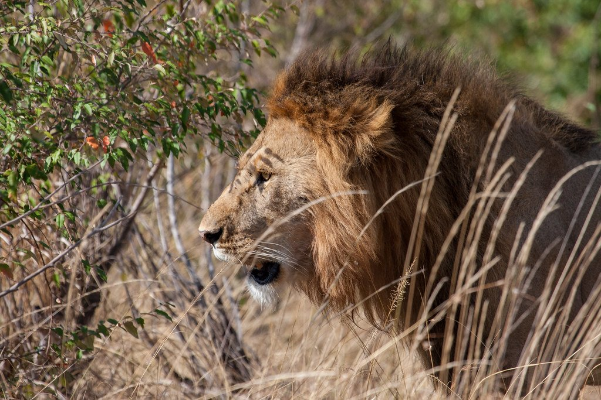
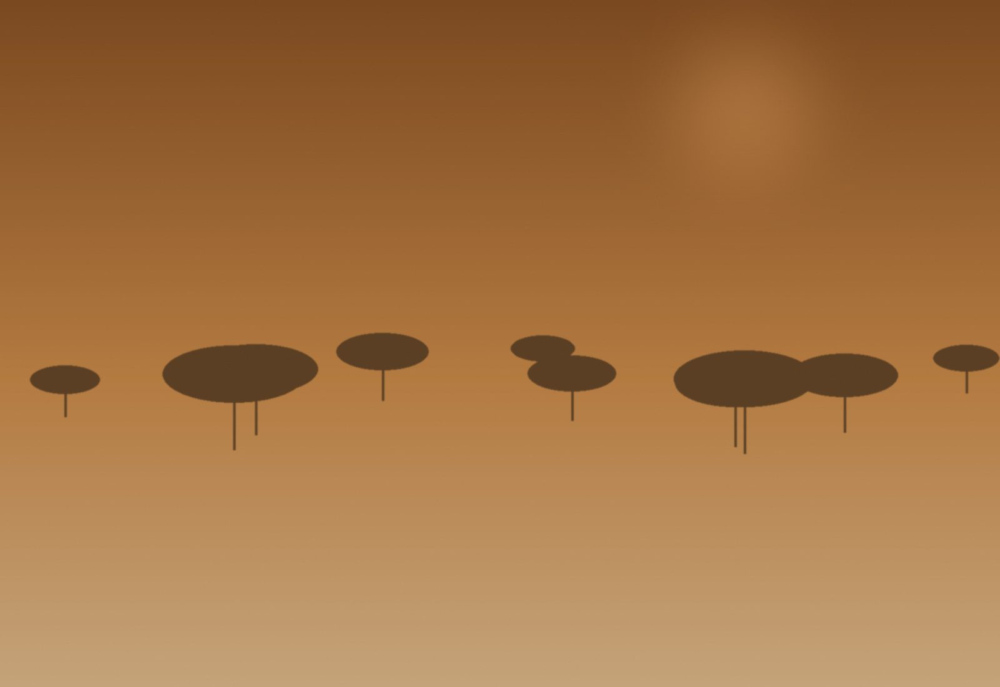
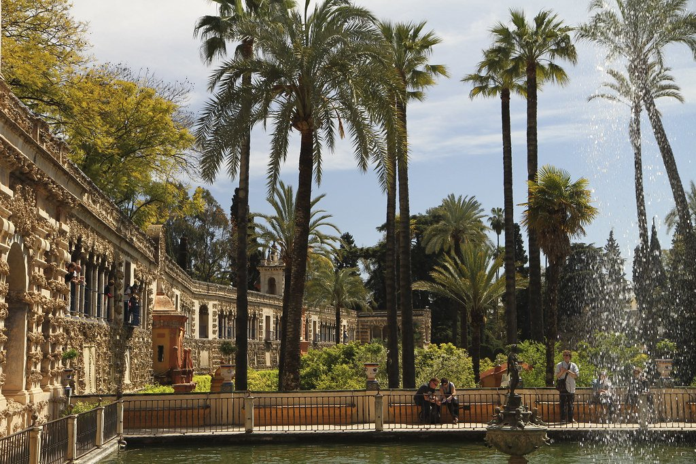

Día 1 · Llegada
Llegada a Windhoek
Vuelo desde BA vía Johannesburgo. Cena en Joe's Beerhouse, oryx y kudu a la parrilla.


Dunas Rojas, Costa de los Esqueletos y Etosha · Edición noviembre 2026
Ver fechas y preciosEl Namib tiene 55 millones de años — es el desierto más viejo del planeta. Las dunas rojas de Sossusvlei son tan altas como rascacielos. En el Deadvlei los esqueletos de camelthorn de 900 años se recortan contra arcilla blanca y cielo cobalto. Hacia el oeste, el desierto se mete en el Atlántico: la Costa de los Esqueletos, una de las costas más letales del mundo, con barcos hundidos en las dunas y colonias de lobos marinos del Cabo.
Recorremos cinco escenarios en once días con cinco charters internos: Windhoek, Sossusvlei (Sonop Lodge), NamibRand Dark Sky Reserve, Skeleton Coast (Shipwreck Lodge), Damaraland (Onduli Ridge) y Etosha (Onguma the Fort). Geólogo en piso en Sossusvlei, intérprete Himba ético en Kaokoland, astrónomo en NamibRand, y safari de fauna en Etosha al final de la estación seca cuando los animales concentran en los pocos pozos de agua.

Amanecer en Dune 45 y caminata por las arcillas blancas con esqueletos de camelthorn, con un geólogo explicando los 55 millones de años de formación.
Coordinada con Save the Rhino Trust, con intérprete y protocolo de respeto. Conversación real con familia Himba, no espectáculo turístico.
Sesión privada con astrónomo en la reserva con clasificación Gold-Tier de la International Dark-Sky Association.
Vuelo desde BA vía Johannesburgo. Cena en Joe's Beerhouse, oryx y kudu a la parrilla.

Charter a Sossusvlei. Sunrise en Dune 45 y Deadvlei con geólogo. Picnic en duna privada. Ascenso opcional Big Daddy.

Cruce Reserva NamibRand. Sesión astronomía nocturna privada. Charter a Skeleton Coast.

Caminata al shipwreck del Eduard Bohlen (encalló 1909, hoy 400m tierra adentro). Cape Cross — colonia de 100.000 lobos marinos. Champagne al ocaso en playa privada.
Charter a Damaraland. Arte rupestre San en Twyfelfontein (UNESCO), 2.000 grabados de hasta 6.000 años.
Tracker para elefantes adaptados al desierto. Formaciones Burnt Mountain y Organ Pipes. Cena al aire libre bajo estrellas.

Visita ética a aldea Himba en Kaokoland con intérprete. Conversación con mujeres en sus chozas de adobe, donde el ocre rojo cubre la piel. Sin invasión fotográfica.
Charter a Etosha. Game drive en concesión privada Onguma. Sunset al pozo de agua iluminado.
Day game drive en el pan. Leones, leopardos, rinocerontes negros, elefantes. Cena despedida con preview del fotógrafo.
Charter a Windhoek. Vuelos internacionales nocturnos.
Sumá días al final del viaje, con salidas privadas.

Vuelo a Livingstone, dos noches en el Royal Livingstone con vista al spray. Ideal extensión post-Namibia.

Mokoros en el delta más grande del mundo sin desembocadura al océano. Combo perfecto con Namibia.

Stay en Cape Town, almuerzo en La Colombe, Stellenbosch y Franschhoek.
| Salida | Disponibilidad | Precio desde | |
|---|---|---|---|
| 7 nov 2026 | Abierta | $10,800 | Reservar → |
| 14 nov 2026 | Pocas plazas | $10,800 | Reservar → |
| 21 nov 2026 | Abierta | $10,800 | Reservar → |
| 28 nov 2026 | Abierta | $10,800 | Reservar → |
| 5 dic 2026 | Lista de espera | $11,200 | Reservar → |
Precios por persona en habitación doble. Suplemento de habitación individual a consultar.